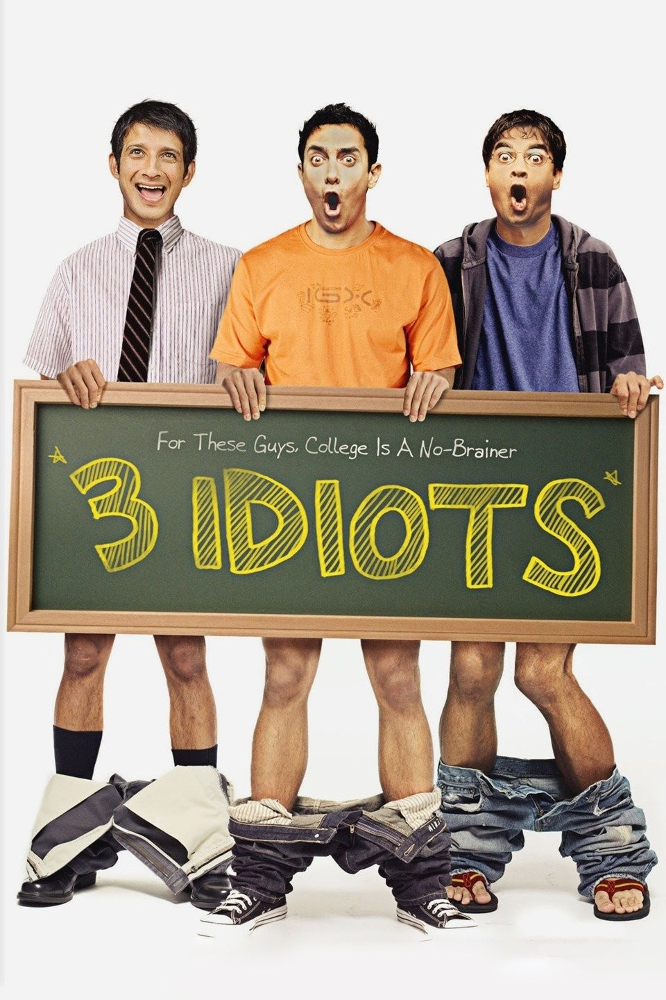
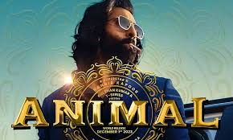

|  |
3 Idiots (2009) is a Bollywood comedy-drama film directed by Rajkumar Hirani and based on the novel
"Five Point Someone" by Chetan Bhagat.
The movie revolves around the lives of three engineering students, Farhan (R. Madhavan), Raju (Sharman
Joshi), and Rancho (Aamir Khan), who form an inseparable bond during their time at an elite engineering
college in India.
The story unfolds through a series of flashbacks, with Farhan and Raju embarking on a journey to find
their long-lost friend, Rancho. Along the way, they recall how Rancho's unorthodox approach to education
and life had a profound impact on them.
Rancho constantly challenged the traditional education system, promoting creativity, passion, and the
idea of pursuing excellence over success.
|
Movie 1 Wikipedia |
|  |
Animal is a 2023 Bollywood action crime drama helmed by Sandeep Reddy Vanga, while the dialogues were
written by Saurabh Gupta and Siddharth Singh. The movie stars Ranbir Kapoor, Anil Kapoor, and Rashmika
Mandanna in the lead roles, along with Bobby Deol, Bipin Karki, Shakti Kapoor, Suresh Oberoi, Prem
Chopra, Siddhant Karnick, Saurabh Sachdeva, and many other supporting actors.
The cinematography of this film was handled by Santhana Krishnan Ravichandran and Ravichandran.
Harshavardhan Rameshwar composed the film's music and the background score. Bhushan Kumar and Murad
Khetani produced this film under the banners of Bhadrakali Pictures, Cine1 Studios, and T-Series Films.
The movie's distribution was handled by Gulshan Kumar and T-Series Films. Its trailer was released on
November 24, 2023, on YouTube, and the duration of its trailer is 3 minutes 33 seconds.
|
Movie 2 Wikipedia
|